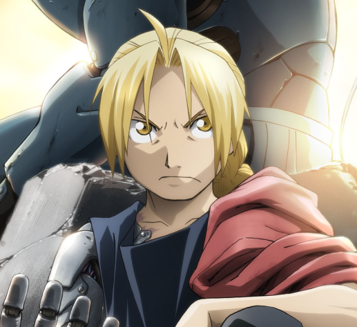

|  |
Edward ElricFull Metal Alchemist
One of the main characters of the anime and manga Hiromu Arakawa "Steel Alchemist".
The youngest state alchemist in the history of Amestris. |
|
Eating🔥🔥 Fighting🔥 🔥 🔥 🔥 |
Sleeping 🔥 🔥 🔥 Breathing🔥🔥🔥🔥 |
| Breathing🔥🔥🔥🔥 | 3213 |
| 4444 | 55555 |